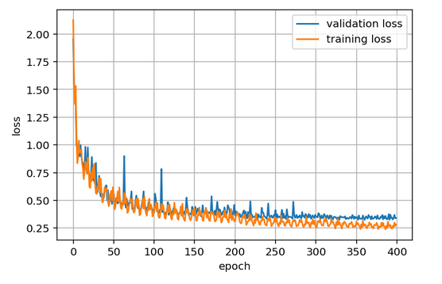
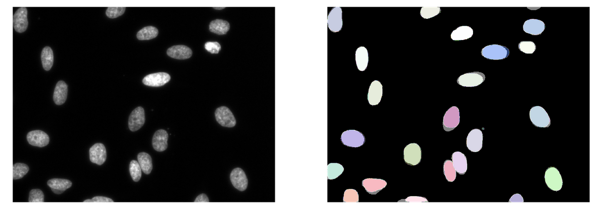

Welcome to StarDistPyTorch’s documentation!¶
StarDistPyTorch is an attempt to reimplement StarDist in PyTorch. Many of the original, helper functions from StarDist are re-used in StarDistPyTorch. Notable differences include:
New function to patch images
Slightly different loss function to incorporate class imbalance (In StarDistPyTorch, background pixels are weighted 10 times less than foreground pixels during the evaluation of the Binary Cross Entropy Loss)
Grid is not downscaled (StarDist predicted on a downscaled-image to save memory)
self.train_foreground_only parameter, which is used for effective sampling of patches during training in StarDist, is not implemented in StarDistPyTorch
Shape completion is not implemented in StarDistPyTorch
Potential TODOs on the horizon include:
Todo

Installation¶
Open a new terminal and type in the following commands inside a preferred directory location
git clone https://github.com/MLbyML/StarDistPyTorch.git
git checkout BaseImplementation
conda env create -f environment.yml
conda activate stardistPytorchEnv
python3 -m ipykernel install --user --name stardistPytorchEnv --display-name "stardistPytorchEnv"
Note
stardistPytorchEnv includes installation of PyTorch 9.0. Adjust this based on the CUDA version on your system.
Training¶
{kind=link}
Currently images are split into training and validation sets. Then they are patched with size (256 x 256) and augmented. Lastly, a call is made to training.py through the code block below:
trainHist, valHist = trainNetwork(net = net, trainData = dataXt, valData = dataXv, trainDataGT = np.array(Y_trn_dist),
valDataGT = np.array(Y_val_dist), trainDataMask = dataMt, valDataMask = dataMv,
postfix = postfix, directory="models/", device = device, verbose=False,
numOfEpochs= 400, stepsPerEpoch=100, miniBatchSize=4, learningRate=3e-4, supervised=True, valSize=valSize)
It is seen that incorporating for class imbalance gives better performance.
Prediction¶
{kind=link}
The Average Precision for the DSB test data set of 50 images, comes out to be 0.836 at IOU = 0.5 with StarDistPyTorch. For reference, the same metric is equal to 0.864 at IOU = 0.5 with StarDist.
The optimal threshold for the DSB test data set of 50 images, comes out to be prob_thresh=0.1 and nms_thresh=0.2 with StarDistPyTorch. For reference, the same thresholds come out to be prob_thresh=0.41 and nms_thresh=0.5 with StarDist respectively.